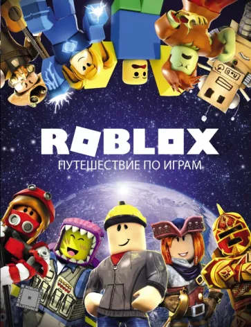

Страница об игре Roblox
Roblox позволяет игрокам покупать, продавать и создавать виртуальные предметы. Одежда может быть куплена любым игроком, но продавать её могут только пользователи, имеющие Premium подписку. Только администраторы Roblox могут продавать аксессуары, снаряжение и наборы под официальной учётной записью Roblox. C 2019 года делать аксессуары могут пользователи, которые были отобраны Roblox в качестве UGC-креаторов. Предметы с ограниченным статусом могут продаваться только по каталогу или продаваться в Builder Club (нынешний Premium). Robux — это виртуальная валюта в Roblox, которая позволяет игрокам покупать различные предметы. Игроки могут получить Robux с помощью реальных покупок, другого игрока, покупающего его предметы, или ежемесячно зарабатывая Robux с подпиской. До 2016 года в Roblox существовала другая валюта — Tix (сокращение от англ. Tickets), которую можно было потратить на вещи в каталоге и на рекламу. Игроки зарабатывали Tix с помощью разных методов, например, ежедневно посещая сайт. Валюта была упразднена 14 апреля 2016 года, а все остатки на балансе были конфискованы. Благодаря своему статусу игровой платформы, Roblox имеет множество игр, созданных игроками. По состоянию на май 2020 года в каждой из самых популярных игр в Roblox было более 10 миллионов активных игроков в месяц. По состоянию на ноябрь 2021 года в Roblox есть 49 приключений, набравших более 1 миллиарда посещений, 26 953 приключений, набравших свыше 100 тысяч посещений и 107 737 приключений, которые набрали 10 тысяч посещений. Также Roblox упомянул, что на их платформе в день отправляют более 2,5 млрд сообщений и 17 миллионов игроков заводят себе друзей также ежедневно. Также в марте 2021 года американское интернет-издание TechCrunch отметило, что игры Roblox в значительной степени отличаются от традиционных бесплатных видеоигр. В феврале 2022 года Roblox поделился об успехах за весь 2021 год, где говорилось о том, что игроки провели в приключениях более 41 млрд часов. Успешные игры в Roblox ориентированы на немедленную вовлечённость в игру, а добавление руководств значительно снижает её у игроков, вопреки общепринятому мнению о бесплатных играх.
Видео про Roblox
Саундрек Roblox
Офис Roblox